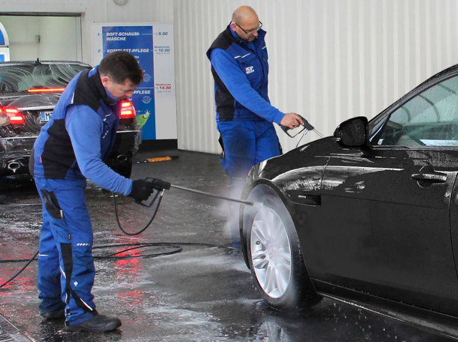

Karriere
Werde Teil des TOP WASH-Teams
Was uns von anderen Autowaschanlagen unterscheidet, ist vor allem eines: unser Team. Bei TOP WASH wird nach wie vor gründlich von Hand vorgewaschen – genau das schätzen unsere Kundinnen und Kunden. Erfüllende Arbeit, faire Bezahlung und ein Team, das zusammenhält – das erwartet dich bei uns.

Mitarbeiter (m/w/d) für die Autowaschstraße
Sofort gesuchtVoll- oder Teilzeit · Alle 4 Standorte in Rhein-Main
Wir suchen tatkräftige Unterstützung für unser Team – ob mit Erfahrung oder als Quereinsteiger. Wichtig ist uns vor allem Zuverlässigkeit und Freude am Umgang mit Kundschaft.
Deine Aufgaben
- Beratung und Betreuung unserer Kundschaft
- Handvorwäsche der Fahrzeuge
- Bedienung der Waschanlage nach entsprechender Einarbeitung
- Allgemeine Reinigungs- und Wartungsarbeiten an der Anlage
- Kassieren und Tagesabrechnung
- Innenreinigung der Kundenfahrzeuge
Dein Profil
- Freundlicher, kundenorientierter Umgang
- Zuverlässigkeit und Pünktlichkeit
- Handwerkliches Geschick und technisches Grundverständnis
- Teamfähigkeit und Flexibilität bei wechselnden Arbeitszeiten
Wir bieten
- Gründliche Einarbeitung und Schulung
- Ein festes, eingespieltes Team
- Eine langfristige Perspektive
- Abwechslungsreiche Tätigkeit in angenehmem Arbeitsumfeld
- Faire Bezahlung sowie freiwillige Sonderzahlungen
- Faire Arbeitszeiten mit Arbeitszeitkonto
- Trinkgeld durch unsere Kundschaft
Interesse geweckt?
Wir freuen uns auf deine vollständigen Bewerbungsunterlagen – per E-Mail oder telefonisch.